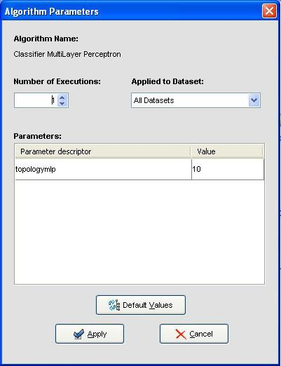

Algorithm parameters configuration
Once a module has been inserted in the graph, it is possible to configure the value of its parameters. To do so, the user have to double click on the algorithm symbol and a dialog will be shown.

At the top of this dialog it is possible to set the number of times that the algorithm will be executed (only available for random methods). Each execution will be made using a seed generated from the initial seed. The second list allows specifying in which data sets the parameters will be changed.
In the table located in the center of the window, all the algorithm parameters are established to its initial values. These values can be modified, as far as the new values will be appropriate for the concrete method; otherwise, an error message will appear:
Finally, the Default Values button allows returning all parameter to its default values.